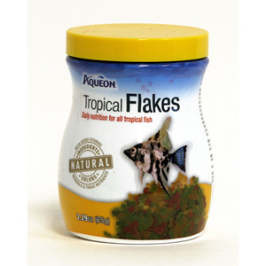

Item Code: FF01
Tropical Flakes
Description:
These flakes are specially formulated for your Tetras, Angelfish, Discus, Barbs, Guppies and other tropical fish. The food contains garlic to boost your fish's immune system. This Aquarium Pharmaceuticals Tropical Flake Food offers wholesome nutrition for your fish. The marigold and carrot blend enhances natural colors in your fish. The food contains garlic to boost your fishes' immune systems.
Price: $6.50
Add to cart

Item Code: FF02
Algae Wafers
Description:
Offers complete and balanced nutrition for superior growth and improved health
Contains higher levels of spirulina and vegetable matter plecostomus and other algae eaters prefer
The uniquely shaped disc won't dissolve readily or cloud water
The "original algae wafer"- Easy and convenient to use
Rich in necessary vitamins and nutrients, including stabilized vitamin C to reduce stress related disease
Price: $11.99
Add to cart

Item Code: FF03
Frozen Bloodworm
Description:
Bloodworms Freshwater Fish Food contains natural Red Mosquito Larvae packed with nutrition. Freshwater aquarium fish love the additional variety frozen fish foods add to their diet. Since these Frozen Bloodworms Freshwater Fish Foods have not been heat processed, they retain all their natural vitamins and other essential nutrients.
Price: $2.99
Add to cart